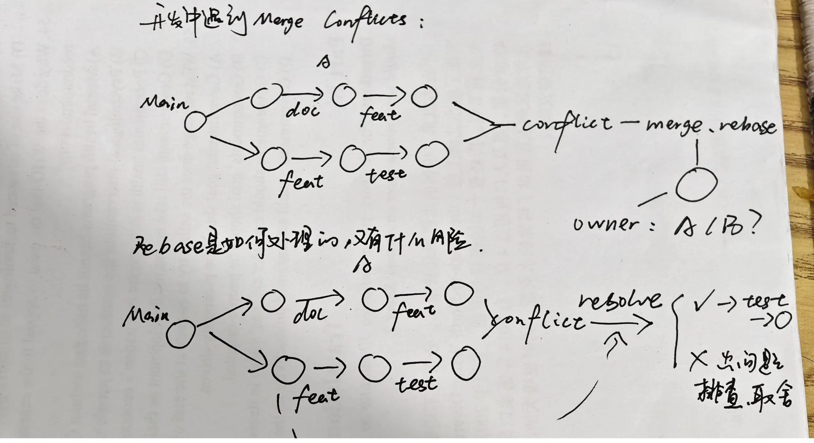
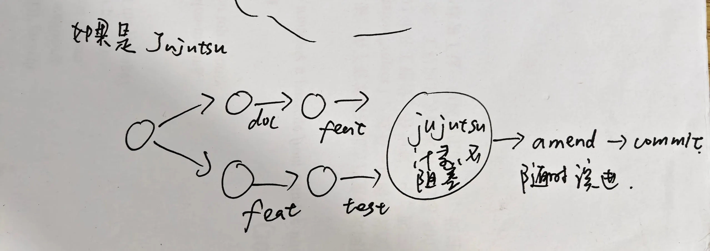

软件仓库管理（二）
生成式软件工程 · 第四课
1 项目是各种文件的集合
项目是各种文件的集合 intent（intent、readme）、spec、code
文件管理项目是「文件系统」的便利
But
Something not in it 文档 — 代码 - 测试 的关联
如果没有连上、更新上，就会脱节
技术债 → 陷入泥潭
写好代码 ≠ 文档同步
2 Git 管理了什么？
Git 管理了什么
文件、目录、快照与快照之间的关系
并行开发和冲突
「用 commit 替代 change」
如果想重新设计版本管理系统
Git 经常需要处理 commit 之间的 delta（change）
cherry-pick，rebase ……
merge 会遇到：
我们想操作的是 change
但这是用 commit 替代的

图1-1

图1-2
Jujutsu：把 change 作为一等公民
jujutsu → 把 change 作为一等公民
（不需 commit，类似于 auto-save）
让未完成的工作也有位置
让未完成的工作也有位置
→ 永远是被提交对象（不需 staging area）类似不断 commit 和 amend
3 思想实验：Agent 时代，再次重新设计版本管理系统
Agent 时代，再次设计版本管理系统 → 版本的使用者是人
人起 Single 单线程
只有一份 I/O 一双手、一张嘴、一对眼睛
沟通编辑 change — 1h → commit ≈ 一小时 Because of Communication（人与人的沟通始终有速率上限）
但 Agent Team（Swarm 团队）
单个 Agent 记快，并且 Agent 更快
But git 相比来说就不适合，就变慢了（Git 为人设计，Agent 的速度远远更快）
stash 与「Git 基本够一个人用」
Git 基本上够一个人用了——比如 Stash、Branch 这些功能，实际上都是用于个人开发和协助开发，但都是人类在开发。这种情况下，JJ 也会很好用——那当然会更好用——但这并不完全是、也不是真正的 Agent Native 版本管理系统。
已有的一个解决方案：git worktree
把每个 Agent 当作独立开发者，一个分支一个路径
e.g. git worktree 可以 隔离环境，独立提交（相当于复制一个被隔离的项目目录）
提问，了解、规划（use Agent）
但是冲突仍要 merge rebase
为什么不了解 Git，在 Agent Native 时代反而能更好地学习软件工程
在对比 Git 与 Jujutsu 时可以清晰地看到这种学习范式的颠覆：长期使用 Git 的开发者早已形成了深固的肌肉记忆，即使明知 Jujutsu 把 change 作为一等公民、修改即自动提交等新设计更加合理，也会因为高昂的习惯重训与迁移成本而难以转变。
但在 Agent Native 时代，未被 Git 定型的学习者反而具备了后发优势——Agent 既能够直接代劳具体的工具操作，又能随时讲解新旧方案的优劣。学习者不再需要从繁琐的操作命令学起，而是能够先理解更自然、更先进的现代设计，再倒过来回望历史，看清旧设计当年究竟因何而生、又存在哪些妥协与缺陷。
此时的学习重点不再是「如何使用或切换某款具体工具」，而是在看懂工具演化与设计权衡的过程中，直达软件工程的第一性原理（First Principles），建立起更具前瞻性的系统认知。
4 团队协作：版本控制只是工具
回到为什么需要版本控制
人的限制，塑造了工具
（1）生产效率有限
（2）communication gap：沟通效率 ↓
（3）人就算沟通了，也可能各种出错
→ 快照、小步前进；bisect、blame ……
版本控制只是工具 → 真正困难的是进度（团队）管理
现在 AI 的斩杀线（也）没到 → 也没有真的办法解决（没有办法真正解决软件工程里的团队协作问题和实际的迭代问题）
主 Agent 规划，子 Agent 上锁开干
Imagine New Agent 版本管理系统
主 Agent 规划，子 Agent 上锁开工
Agent 只干一件事：推进一件事，把屁股擦干净
主 Agent 负责规划
子 Agent 负责上锁开干
→ Agents 完全可以直接上互斥锁，把活干了，解锁
对照 lect4「一种设计是由主 Agent 负责规划，把任务拆成边界明确的部分；子 Agent 要修改某项共享资源时先取得互斥锁，读取最新状态，完成修改和必要检查，留下可恢复的快照，再释放锁。」
事后合并 vs 事前上锁（两条路线对照）
Agent Swarm 更容易触发事务冲突。
⬇️
用悲观的并发控制（并发锁）来阻塞别的 agent 干
MVP 与「从零开始」
开始做一个项目
从头开始 — 连需求都没对齐
。"从零开始做产品"的难度 远大于（>>） "参与一个成熟开源项目"
→ 任何「确定」的东西，都可能要把需求的误解固定下来（intent-spec-impl gap）
·准则：没有什么是不能变的，能不能以不变应万变？
→ 即：你的软件应该能够抵抗和满足需求的变化。
用 MVP 验证需求
Minimum Viable Product 最小可行验证
MVP 一个立即就使用 不完备的功能
（ 帮助你看清潜在变化，评估软件的设计
（ 帮助你确定 到底想要什么东西
5 项目可以不只是「当前状态」
启发
项目可以不只是 当前状态
技术会过时，First Principles 会留下
第一性原理
技术会过时 First Principles 会留下
举例：3.3 为什么不了解 Git，在 Agent Native 时代反而能更好地学习软件工程 —— 那是「不被工具绑住、直接看到原理」的一次具体演示。